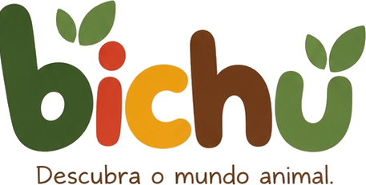

Um app para crianças de 2 a 8 anos descobrirem os animais brincando: sons reais, nomes em sílabas, curiosidades e desafios de tocar e arrastar.
- Sem anúncios
- Sem cadastro
- Sem coleta de dados
- Funciona offline
Suporte
Encontrou um problema ou tem uma sugestão? Escreva para contato@techhands.com.br. Respondemos em até 2 dias úteis.
Perguntas frequentes
Como mudo a dificuldade?
Toque na engrenagem e segure o botão da Área dos pais. Em “Modo padrão”, escolha Explorador (2 a 4 anos) ou Aventureiro (5 a 8 anos).
O som não toca.
Confira se o aparelho não está no modo silencioso e se o som está ligado na Área dos pais.
O progresso some se eu trocar de aparelho?
Sim. Para proteger a privacidade da criança, o progresso fica salvo só no aparelho, sem conta nem nuvem.